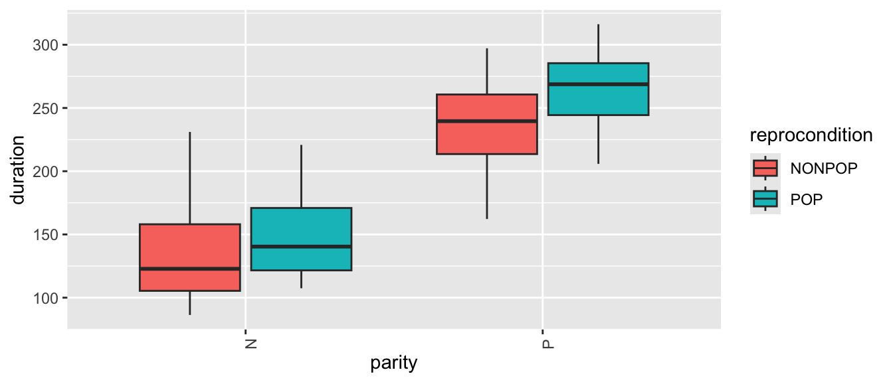
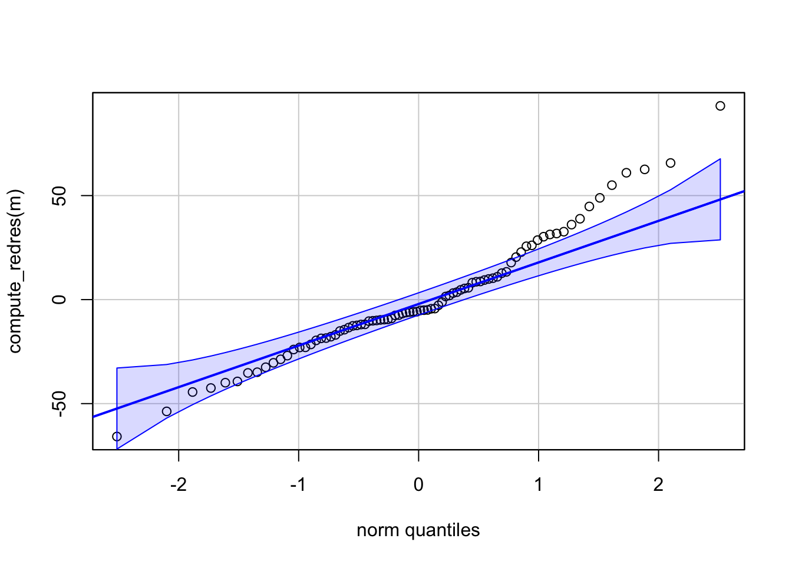
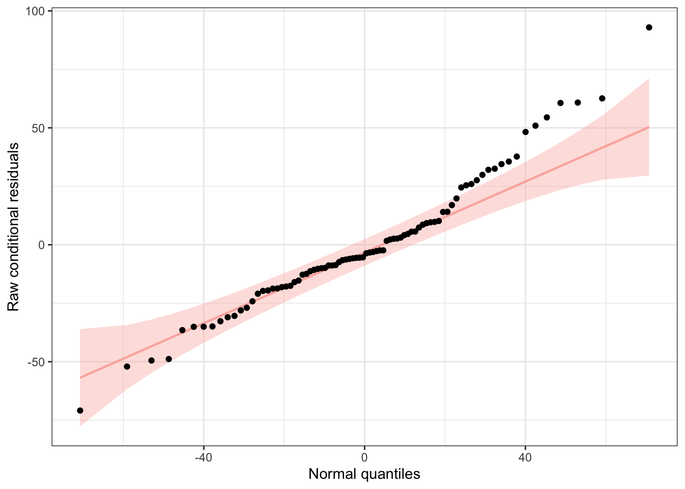
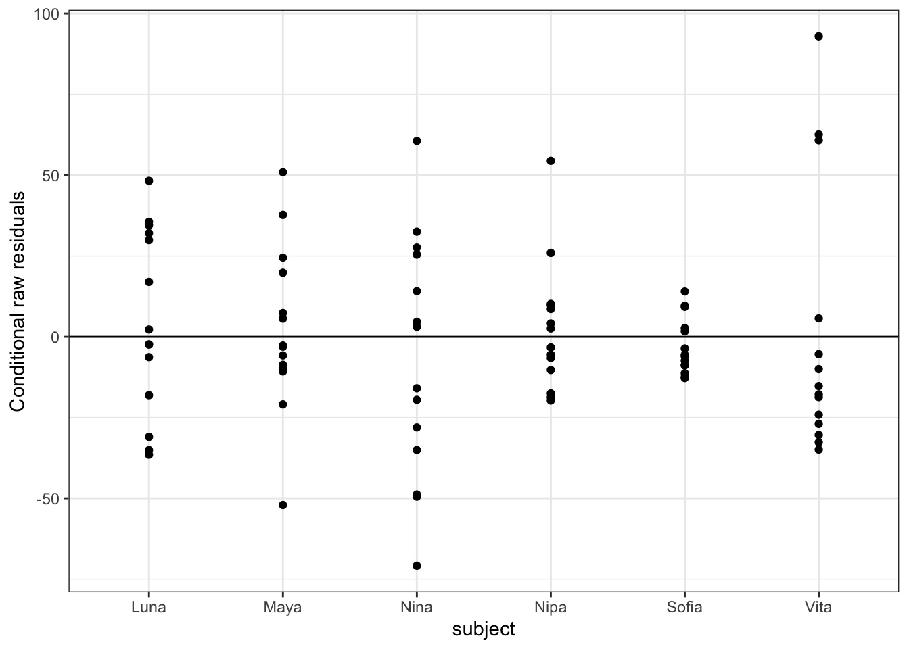

Be sure you have the packages {car}, {cowplot}, {lmtest}, and {MASS} installed
24.3 Overview of “Mixed” Models
A final extension of linear regression modeling that we will talk about is so-called “multilevel” or “mixed effects” modeling. This is a very complex topic, and we will only scratch the surface!
In a (general or generalized) linear mixed model, we have a reponse variable, \(Y\), and observations that fall into different factor categories each with some set of levels (e.g., “sex” with levels “male” and “female”), and we are interested in the effects of the various factors and factor levels on the response variable. Generically, if \(\mu\) = a population mean response and \(\mu_A\) = mean response for observations belonging to factor level A, then the effect of A is given by \(\mu\) - \(\mu_A\). We have already dealt with factors and factor levels in our linear regression models when we looked at categorical predictors (e.g., sex, rank category) in our discussions of ANOVA and ANCOVA.
We can conceptualize these factor effects as being either fixed or random. Fixed factors are those that reflect all levels of interest in our study, while random effects are those that represent only a sample of the levels of interest. For example, if we include sex as a factor in a model with the factor levels “male” and “female”, this (typically) will cover the entire gamut of levels of interest our study, thus we would consider sex a fixed factor. When we were doing ANOVA and ANCOVA analyses previously, we were implicitly looking at the effects of such fixed factors.
However, if our observational data were to consist of repeated observations of the same sampling unit, e.g., measurements taken on the same set of individuals on different dates, individual ID would be considered a random factor because it is unlikely that we will have collected data from all possible “levels of interest”, i.e., from all possible individual subjects. We have not yet dealt with such random factors as an additional source of variance in our modeling.
So-called mixed models, then, are those that include BOTH fixed and random effects. Including random effects in addition to fixed effects in our models has several ramifications:
Using random effects broadens the scope of inference. That is, we can use statistical methods to infer something about the population from which the levels of the random factor have been drawn.
Using random effects naturally incorporates dependence in the model and helps us account for pseudoreplication in our dataset. Observations that share the same level of the random effects are explicitly modeled as being correlated. This makes mixed effect modeling very useful for dealing with time series data, spatially correlated data, or situations where we have repeated observations/measures from the same subjects or sampling unit.
Using random factors often gives more accurate parameter estimates.
Incorporating random factors, however, does require the use of more sophisticated estimation and fitting methods.
Not surprisingly, there several different varieties of mixed modeling approaches, which are supported in a variety of different packages in R:
Standard or general Linear Mixed Models (LMM), analogous to standard or general linear regression - used when we are dealing with normally distributed variables and error structures.
Generalized Linear Mixed Models (GLMM), analogous to generalized linear regresseion - used when we are dealing with various other variable types and error structure (e.g., binary, proportion, or count data).
Nonlinear Mixed Models (NLMM), analogous to nonlinear regression - used if we are dealing with situations where our response variable is best modeled by a nonlinear combination of predictor variables.
NOTE: We have not talked at all in this course about general or generalized NONLINEAR modeling, but it is worth knowing that such approaches are also possible. NONLINEAR modeling is where our regression equation is a nonlinear function of the model parameters.
We will explore “mixed effects” modeling using an example based on this excellent tutorial.
EXAMPLE:
Suppose we have measured the amount of grooming received by female chimpanzees when they are either in their periovulatory period (i.e., the window of 2-3 days around the likely time of ovulation) or duing other portions of their reproductive cycle. We collected data on the duration of grooming bouts received and scored a female’s reproductive condition at the time as a categorical factor with two levels: “POP” versus “NONPOP”. On top of that, we also recorded data on female parity at the time of the grooming bout, i.e., whether the female had given birth previously (was “parous”, or “P”) or had not yet had an offspring (was “nulliparous”, or “N”).
If we are interested in how reproductive condition and parity influence how much grooming a female receives, our simple regression model would look like this:
Also imagine that our study design was such that we took multiple observations per subject. That is, our data set includes records of multiple grooming bouts received by each subject. This situation violates the assumption of independence of observations that we make for standard linear regression: multiple responses/measures from the same subject cannot be regarded as independent from each other.
Using a mixed effects model, we can deal with this situation by adding subject ID as a random effect in our model. Doing so allows us to address the nonindependence issue by estimating a different set of parameters for each level of the factor “subject”. We can either estimate a different intercept for each subject (which would correspond to each female having a different “baseline” level of grooming received) or estimate a different interceptandslope (where individual subjects are presumed to differ both in the baseline level of grooming received and the strength of the relationship between grooming duration, on the one hand, and reproductive condition and parity, on the other). Our mixed effects model estimates these individual level parameters in addition to the main effects of each variable.
This is why a “mixed effects” model is called a mixed model. The models that we have considered so far have been fixed effects only models and included only one or more “fixed” predictor variables and a general error term. We essentially divided the world into things that we somehow understand or that are systematic (the fixed effects, or the explanatory variables) and things that we could not control for or do not understand (the general error, or \(\epsilon\)). These fixed effects models did not examine possible structure within the error term.
In a mixed model, by contrast, we add one or more random effects to our fixed effects that may explain a portion of the variance in our error term.
CHALLENGE
Let’s explore these idea using some actual data. First, load in the dataset “chimpgrooming.csv” and do some exploratory data analysis:
f <-"https://raw.githubusercontent.com/difiore/ada-datasets/main/chimpgrooming.csv"d <-read_csv(f, col_names =TRUE)head(d)
## # A tibble: 6 × 5
## subject parity season reprocondition duration
## <chr> <chr> <chr> <chr> <dbl>
## 1 Nina P WS NONPOP 214.
## 2 Nina P WS POP 206.
## 3 Nina P WS NONPOP 294.
## 4 Nina P WS POP 269.
## 5 Nina P WS NONPOP 205.
## 6 Nina P WS POP 287.
summary(d)
## subject parity season reprocondition
## Length:84 Length:84 Length:84 Length:84
## Class :character Class :character Class :character Class :character
## Mode :character Mode :character Mode :character Mode :character
##
##
##
## duration
## Min. : 86.34
## 1st Qu.:132.36
## Median :205.41
## Mean :197.81
## 3rd Qu.:252.27
## Max. :316.23
Plot grooming received duration in relation to subject ID…
Plot grooming received in relation to reproductive condition and parity…
Show Code
(p <-ggplot(data = d, aes(x = reprocondition, y = duration, fill =factor(parity))) +geom_boxplot() +xlab("reproductive condition") +labs(fill ="parity") +theme(axis.text.x =element_text(angle =90)))
Show Code
# or(p <-ggplot(data = d, aes(x = parity, y = duration, fill =factor(reprocondition))) +geom_boxplot() +xlab("parity") +labs(fill ="reprocondition") +theme(axis.text.x =element_text(angle =90)))

From these plots, we can see lots of [a] individual variation in how much grooming is received (some females seem to receive more than others, overall), [b] variation in response to reproductive condition (where grooming in the POP seems to be higher, overall), [c] limited variation due to parity, and [d] variation in response to this combination of fixed effects.
Finally, plot grooming received into relation to both a fixed effect (reprocondition) and a random effect (subject)…
Show Code
(p <-ggplot(data = d, aes(x = reprocondition, y = duration, fill =factor(subject))) +geom_boxplot() +xlab("reproductive condition") +labs(fill ="subject") +theme(axis.text.x =element_text(angle =90)))
What patterns do you see? There is, again, lots of apparent variation, and some of it seems to be associated with female ID and/or reproductive condition.
24.4 Random Intercept Models
We will now perform an initial mixed effects analysis where we look in more detail at how reproductive condition and parity (as fixed effects) affect grooming duration, where we include individual subject ID as a random effect.
Here is a first mixed effects model that we will fit, using one extension of formula notation that is commonly used in R:
Here, the 1 refers to the fact that we want to estimate an intercept and the pipe operator(“|”) following the “1” signifies that we want to estimate a different intercept for each subject. Note that this generic formula still contains a general error term, \(\epsilon\), to highlight that there will still be unexplained “error” variance after accounting for both fixed and random effects in the model.
We can think of this formula as saying that we expect our dataset to include multiple observations of the response variable per subject, and these responses will depend, in part, on each subject’s baseline level. This effectively accounts the nonindependence that stems from having multiple responses by the same subject.
The {lme4} package in R is commonly used for mixed effects modeling, and the function lmer() is the mixed model equivalent of the function lm(). In the formula syntax for mixed effects models using the {lme4} package, fixed effects are included without parentheses while random effects are included in parentheses (the error, \(\epsilon\), is understood and is not included explicitly).
NOTE: We could also use the package {nlme} for mixed effects modeling (which requires a slightly different formula syntax than that used here). That same package also allows us to do nonlinear mixed effects modeling, which we will not be talking about. It is important to note that {lme4} uses, by default, a slightly different parameter estimation algorithm than {nlme}. Unless otherwise specified, {lme4} uses “restricted maximum likelihood” (REML) rather than ordinary maximum likelihood estimation, which is what is used in {nlme}. In practice, these often give very similar results. We will see below that when we want to compare different models using {lme4}, we will need to tell {lme4} to use ordinary maximum likelihood.
The code block below implements this first “mixed effects” model:
## Linear mixed model fit by REML ['lmerMod']
## Formula: duration ~ reprocondition + parity + (1 | subject)
## Data: d
##
## REML criterion at convergence: 796.1
##
## Scaled residuals:
## Min 1Q Median 3Q Max
## -2.2611 -0.5349 -0.1890 0.3918 3.1994
##
## Random effects:
## Groups Name Variance Std.Dev.
## subject (Intercept) 611.9 24.74
## Residual 847.3 29.11
## Number of obs: 84, groups: subject, 6
##
## Fixed effects:
## Estimate Std. Error t value
## (Intercept) 132.841 15.305 8.680
## reproconditionPOP 20.293 6.352 3.195
## parityP 109.650 21.173 5.179
##
## Correlation of Fixed Effects:
## (Intr) rprPOP
## rprcndtnPOP -0.208
## parityP -0.692 0.000
Let’s focus on the output for the random effects first. Have a look at the column Std.Dev.. The entry for subject shows us how much variability in grooming duration (apart from that explained by the fixed effects) is due to subject ID. The entry for Residual summarizes the remaining variability in grooming duration that is not due to subject or to our fixed effects. The latter is our \(\epsilon\), the “random” deviations from the predicted values that are not due to either subject or our fixed effects.
The fixed effects output mirrors the coefficient tables that we have seen previously in our linear models that have focused only on fixed effects. The coefficient “reproconditionPOP” is the \(\beta\) coefficient for the categorical effect of reproductive condition. The positive sign for the coefficient means that grooming duration is GREATER by 20.293 units for POP than for NONPOP females. Then, there is a standard error associated with this slope, and a t value, which is simply the estimate divided by the standard error.
The coefficient “parityP” is the \(\beta\) coefficient for the categorical effect of parity. The grooming duration associated with being parous versus nulliparous is GREATER by 109.65 units.
The INTERCEPT in this case is the grooming duration associated with being an average, nulliparous, NONPOP female. Like the lm() function, the lmer() took whatever factor level came first in the alphabet to be the reference level for each fixed effect variable.
Let’s also look at the coefficients coming out of the model and their confidence intervals.
NOTE: For the confint() function, we can set method = argument to “boot” (to generate a CI based on bootstrapping), “profile” (to generate a CI based on likelihoods), or “Wald” (which generates a CI for the fixed effects only). Also, in the output from running confint(), “.sigXX” is the square root of the variance associated with each of the random parameter levels and “.sigma” is the square root of the variance associated with the residuals of the model.
We can see the separate intercepts, i.e., the “baseline” level of grooming received, for each female when they are (presumably) nulliparous and in a NONPOP reproductive condition.
NOTE: Some females may not ever be seen both parity or reproductive conditions!
24.4.1 Visualizing Model Results
As in earlier modules, we can use the predictorEffects() function from the {effects} package to visualize our mixed model results in terms of how the response variable is expected to differ across levels of each predictor variable when the other predictor and the random effect of subject are controlled for.
Similar effects plots for our predictors can be created using plot_model() from the {sjPlot} package.
p1 <-plot_model(m, type ="eff", terms =c("reprocondition"))p2 <-plot_model(m, type ="eff", terms =c("parity"))cowplot::plot_grid(p1, p2, ncol =2)
We can also use plot_model() to visualize estimates and confidence intervals for the fixed effect coefficients and for the random effects.
p1 <-plot_model(m, type ="est")p2 <-plot_model(m, type ="re")
## Warning: Using `size` aesthetic for lines was deprecated in ggplot2 3.4.0.
## ℹ Please use `linewidth` instead.
## ℹ The deprecated feature was likely used in the sjPlot package.
## Please report the issue at <https://github.com/strengejacke/sjPlot/issues>.
cowplot::plot_grid(p1, p2, ncol =2)
The package {mixedup}, installable from here, is a useful package that provides several functions for extracting relevant summary information from mixed models.
## Term Value SE t P_value Lower_2.5 Upper_97.5
## Intercept 132.84 15.30 8.68 0.00 102.84 162.84
## reproconditionPOP 20.29 6.35 3.19 0.00 7.84 32.74
## parityP 109.65 21.17 5.18 0.00 68.15 151.15
mixedup::extract_fixed_effects(m) # table of fixed effects coefficients
## # A tibble: 3 × 7
## term value se t p_value lower_2.5 upper_97.5
## <chr> <dbl> <dbl> <dbl> <dbl> <dbl> <dbl>
## 1 Intercept 133. 15.3 8.68 0 103. 163.
## 2 reproconditionPOP 20.3 6.35 3.20 0.001 7.84 32.7
## 3 parityP 110. 21.2 5.18 0 68.2 151.
mixedup::extract_random_coefficients(m) # table of coefficients for random effects
## # A tibble: 6 × 7
## group_var effect group value se lower_2.5 upper_97.5
## <chr> <chr> <fct> <dbl> <dbl> <dbl> <dbl>
## 1 subject Intercept Luna 143. 17.0 109. 176.
## 2 subject Intercept Maya 137. 17.0 104. 171.
## 3 subject Intercept Nina 118. 17.0 85.0 152.
## 4 subject Intercept Nipa 161. 17.0 127. 194.
## 5 subject Intercept Sofia 99.8 17.0 66.5 133.
## 6 subject Intercept Vita 138. 17.0 105. 171.
mixedup::extract_random_effects(m) # table of coefficients for each level of random effect
## # A tibble: 6 × 7
## group_var effect group value se lower_2.5 upper_97.5
## <chr> <chr> <fct> <dbl> <dbl> <dbl> <dbl>
## 1 subject Intercept Luna 9.93 7.42 -4.62 24.5
## 2 subject Intercept Maya 4.54 7.42 -10.0 19.1
## 3 subject Intercept Nina -14.5 7.42 -29.0 0.082
## 4 subject Intercept Nipa 28.0 7.42 13.4 42.5
## 5 subject Intercept Sofia -33.0 7.42 -47.6 -18.5
## 6 subject Intercept Vita 5.08 7.42 -9.46 19.6
24.4.2 Residual Analysis
We can use functions from the {redres} package to conduct some analyses on the residuals resulting from a mixed effects model. The plot_resqq() function creates a QQ plot of the overall residuals from the model. Ideally, these should fall along a line, and we can see that ours do not…
plot_resqq(m)
## Loading required namespace: testthat
## Warning: `aes_string()` was deprecated in ggplot2 3.0.0.
## ℹ Please use tidy evaluation idioms with `aes()`.
## ℹ See also `vignette("ggplot2-in-packages")` for more information.
## ℹ The deprecated feature was likely used in the redres package.
## Please report the issue to the authors.
## Registered S3 method overwritten by 'car':
## method from
## na.action.merMod lme4

… rather, the residuals from this model appear to deviate from a normal distribution, thus the appropriatess of using linear regression here is suspect!
The plot_redres() function plots the residuals with respect to fitted values of the response variable.
We can also pass an “xvar =” argument to plot_redres() to view our residuals by our different predictor variables, e.g., reprocondition, parity, or subject.
The code below generates and prints all of these plots…
In the plot of residuals by fitted values (upper left), the residuals should roughly form a horizonal belt around the zero line, with the points randomly scattered above and below 0. Such a pattern would be consistent with “homoskedasticity”, or equal variance, in the error term across values of the predictor terms and the response. Here, things look pretty good (although perhaps the width of the “belt” of points looks like it may be wider at larger values of the fitted response).
In the other plots, we are looking to see whether the scatter (variance) above and below the zero line is similar across levels of the predictor variables.
Finally, we can use the plot_ranef() function to plot estimate modal values for the random effects (i.e., in our model, for each subject conditioned on the fixed effects) against quantiles of the normal distribution. For linear regression to be appropriate, the random effects should not deviate from normal expectations.
plot_ranef(m)
Alternatively, we can use the {sjPlot} function plot_model() with the “type =” argument set to “diag” to produce a similar set of diagnostic plots.
p <-plot_model(m, type ="diag")cowplot::plot_grid(p[[1]], p[[3]], p[[4]], ncol =1)
Inference using LRTs
In mixed effects models, it is not as straightforward as it is for standard linear models to determine p values associated with either overall models or individual coefficients. However, using likelihood ratio tests, which we previously used for comparing among generalized linear models, is one common approach. Likelihood is the probability of seeing the data we have actually collected given a particular model. The logic of the likelihood ratio test is to compare the likelihood of two models with each other, i.e., a model that includes the factor that we are interested in versus a reduced, nested model with that factor excluded.
So… if we are interested in the effect of reproductive condition on grooming duration, we could compare a more complex model…
## Linear mixed model fit by maximum likelihood ['lmerMod']
## Formula: duration ~ parity + (1 | subject)
## Data: d
##
## AIC BIC logLik -2*log(L) df.resid
## 833.4 843.2 -412.7 825.4 80
##
## Scaled residuals:
## Min 1Q Median 3Q Max
## -2.4996 -0.6492 -0.1198 0.6594 2.7072
##
## Random effects:
## Groups Name Variance Std.Dev.
## subject (Intercept) 380.6 19.51
## Residual 947.3 30.78
## Number of obs: 84, groups: subject, 6
##
## Fixed effects:
## Estimate Std. Error t value
## (Intercept) 142.99 12.22 11.697
## parityP 109.65 17.29 6.343
##
## Correlation of Fixed Effects:
## (Intr)
## parityP -0.707
NOTE: Here, we added the argument “REML = FALSE” to the lmer() function. This is necessary to do when we want to compare models using the likelihood ratio test. Basically, REML uses a different algorithm to determine likelihood values than ordinary likelihood, and, if we want to use these likelihoods to execute an LRT, we need to use ordinary likelihood. See this site for a more complete explanation of this issue.
We then perform the likelihood ratio test using the anova() function or the lrtest() function from {lmtest}.
These results tell us that the model containing both reproductive condition and parity as fixed effects fits the data better than a model lacking reproductive condition and containing only parity as a fixed effect, while accounting for subject as a random effect.
CHALLENGE
Now, compare a model containing reproductive condition and parity to one containing just reproductive condition.
Based on this result, including parity as well as reproductive condition as fixed effects also significantly improves the fit of our model.
CHALLENGE
Construct a model that includes an interaction of reproductive condition and parity and compare it to a model without the interaction term. Is the interaction of these two fixed effects significant?
In this case, adding the interaction of reproductive condition and parity does not significantly improve the explanatory power of the model.
24.5 Random Slope Models
In the exercise above, we included only estimation of a separate INTERCEPT for each female and presumed that the same relationships (SLOPES) between grooming duration and reproductive condition + parity obtained for all females. But we can also allow that relationship to vary from subject to subject. We would indicate this model in formula notation as follows:
## Linear mixed model fit by maximum likelihood ['lmerMod']
## Formula: duration ~ reprocondition + parity + (1 + reprocondition | subject) +
## (1 + parity | subject)
## Data: d
##
## AIC BIC logLik -2*log(L) df.resid
## 833.6 857.9 -406.8 813.6 74
##
## Scaled residuals:
## Min 1Q Median 3Q Max
## -2.4515 -0.6093 -0.1559 0.3851 3.2152
##
## Random effects:
## Groups Name Variance Std.Dev. Corr
## subject (Intercept) 83.984 9.164
## reproconditionPOP 1.466 1.211 -1.00
## subject.1 (Intercept) 628.534 25.071
## parityP 628.066 25.061 -1.00
## Residual 835.803 28.910
## Number of obs: 84, groups: subject, 6
##
## Fixed effects:
## Estimate Std. Error t value
## (Intercept) 132.530 16.294 8.134
## reproconditionPOP 20.293 6.328 3.207
## parityP 110.271 17.258 6.389
##
## Correlation of Fixed Effects:
## (Intr) rprPOP
## rprcndtnPOP -0.211
## parityP -0.902 0.000
## optimizer (nloptwrap) convergence code: 0 (OK)
## boundary (singular) fit: see help('isSingular')
Here, we have changed the random effects, which now look a little more complicated. The notation “(1 + reprocondition | subject)” tells the model to estimate differing baseline levels of grooming duration (the intercept, represented by 1) as well as differing responses to the main factor in question, which is reproductive condition in this case. We do the same for parity.
NOTE: It is equivalent to use just “(reprocondition | subject)” rather than “(1 + reprocondition | subject)” to specify that we want our analysis to estimate both an intercept and slope coefficient for each subject. We use the latter to be explicit, though, as we could used “(0 + reprocondition | subject)” to return a single intercept but different slopes for each subject, which is sometimes referred to as a “fixed intercept” model.
Looking at the coefficients of the new model, we see the effects. Each female now has a different intercept and a different coefficient for the slopes of grooming duration as a function of both reproductive condition and parity.
Finally, effects plots of how the expected amount of grooming received varies with the fixed effects (reprocondition and parity) under our new random slope model is the same as that under the random intercept model.
## Term Value SE t P_value Lower_2.5 Upper_97.5
## Intercept 132.53 16.29 8.13 0.00 100.59 164.47
## reproconditionPOP 20.29 6.33 3.21 0.00 7.89 32.70
## parityP 110.27 17.26 6.39 0.00 76.45 144.10
mixedup::extract_fixed_effects(m)
## # A tibble: 3 × 7
## term value se t p_value lower_2.5 upper_97.5
## <chr> <dbl> <dbl> <dbl> <dbl> <dbl> <dbl>
## 1 Intercept 133. 16.3 8.13 0 101. 164.
## 2 reproconditionPOP 20.3 6.33 3.21 0.001 7.89 32.7
## 3 parityP 110. 17.3 6.39 0 76.4 144.
NOTE: Here, running the functions extract_random_coefficients() and extract_random_effect() would throw an error because we would be generating two (Intercept) terms per random effect level, one for each of two predictors.
24.5.1 Residual Analysis
Once again, we can use the {redres} package to do some visual residual analysis…
plot_resqq(m)

plot_redres(m)
plot_redres(m, xvar ="subject")

NOTE: Here, running the functions plot_ranef() would throw an error because we would be generating two (Intercept) terms per random effect level, one for each of two predictors. If we wanted, we could run the ranef() function on the model, look at the $subject dataframe, and pull out the columns we wanted to plot against normal quantiles using qqPlot() or qqnorm().
Inference using LRTs
To then get p values associated with each of the fixed factors, we can use likelihood ratio tests…
# random effects onlynull <-lmer(data = d, duration ~ (1+ reprocondition | subject) + (1+ parity | subject), REML =FALSE)# full model with both fixed effectsfull <-lmer(data = d, duration ~ reprocondition + parity + (1+ reprocondition | subject) + (1+ parity | subject), REML =FALSE)# model without reproductive condition as a fixed effectminusRC <-lmer(data = d, duration ~ parity + (1+ reprocondition | subject) + (1+ parity | subject), REML =FALSE)# model without parity as a fixed effectminusP <-lmer(data = d, duration ~ reprocondition + (1+ reprocondition | subject) + (1+ parity | subject), REML =FALSE)# p value for reproductive condition as a fixed effectanova(minusRC, full)
For a long time, the appropriateness of our mixed models was assessed as above - i.e., by evaluating the significance of each fixed effect using LRTs. As information theoretic approaches have become more popular, it is increasingly common to assess model fit by comparing the AIC values of different models, acknowledging the caveat that AIC can only tell us about the relative fit of alternative models, but not whether a particular model is a good fit, overall. Recall that AIC values are a way of inverting and scaling model log-likelihoods that penalizes models with greater numbers of parameters.
The aictab() function from {AICcmodavg} neatly prints out tables with AIC, Delta AIC, and log-likelihood values, along with AIC “weights”.
##
## Model selection based on AICc:
##
## K AICc Delta_AICc AICcWt Cum.Wt LL
## full 10 836.65 0.00 0.91 0.91 -406.82
## minusP 9 842.51 5.87 0.05 0.95 -411.04
## minusRC 9 842.66 6.02 0.04 1.00 -411.11
## null 8 851.47 14.82 0.00 1.00 -416.77
detach(package:AICcmodavg)
NOTE: Here we are printing out AICc values, rather than AIC values. AICc is simply a version of AIC with a correction added for small sample sizes. To print the uncorrected AIC values, which appear in the anova() LRT output, we can add the argument “second.ord = TRUE” to the aictab() function.
\[AIC_c = AIC + \frac{2K^2 + 2K}{n-K-1}\]
where \(K\) is the number of parameters and \(n\) is the sample size.
In the table, for each model, \(K\) is the number of model parameters, the \(Delta\ AICc\) value is the difference between that model’s AICc and the best model’s AICc (again, here, that is the full model), and the \(AICc\ weight\) is the relative likelihood of that model. [The weights for a particular set of models sum to 1, with each weight equal to the model’s likelihood divided by the summed likelihoods across all models.]
Where the best model has a very high Akaike weight, e.g., >0.9, it is reasonable to base inferences about the included variables on that single most parsimonious model, but when several models rank highly (e.g., several models have Delta AICc values <2 to 4), it is common to model-average effect sizes for the variables that have the most support across that set of models. That is, “model averaging” means making inferences based on a set of candidate models, instead of on a single “best” model.
Here, note that the full model containing both reproductive condition and parity has the highest likelihood (the least negative log-likelihood value) and a much lower AICc than any of the less complex alternative models tested. It also has a very high Akaike weight (0.91).
NOTE: When running a number of the above models and/or in doing the likelihood ratio tests, we saw a significant result but we also got either a warning that our null models “failed to converge” or we saw a warning about a “boundary (singular) fit”. Both of these warning are due to having a LOT of parameters we are trying to estimate relative to the number of observations we have. Dealing with lack of convergence in fitting maximum likelihood models is beyond what we can cover here, but I encourage you to explore that on your own!
Other Methods for Assessing Fit
Using AIC values for evaluating and expressing how well a particular model fits a dataset has some critical limitations:
While AIC provides an estimate of the relative fit of various models, it does not say anything about the absolute fit
AIC does not address the amount of variance in a response variable explained by a model
AIC is not comparable across datasets, and so fit is not generalizable
Nakagawa & Schielzeth (2013) and Nakagawa et al. (2017) have published a simple and effective method for calculating a type of pseudo-\(R^2\) (or coefficient of determination) value for generalized linear mixed models, and because linear mixed models are a specific type of GLMM, this method can be used with LMMs as well.
See:
Nakagawa, S., & Schielzeth, H. (2013). A general and simple method for obtaining R2 from generalized linear mixed-effects models. Methods in Ecology and Evolution, 4, 133–142.
Nakagawa, S., Johnson, P. C. D., & Schielzeth, H. (2017). The coefficient of determination R2 and intra-class correlation coefficient from generalized linear mixed-effects models revisited and expanded. Journal of the Royal Society Interface, 14, article 20170213.
In these papers, two measures are proposed for characterizing the amount of “variance explained” for mixed effects models:
\(Marginal\ R2GLMM(m)^2\) is the amount of variance explained on the latent (or link) scale rather than the original scale. We can interpret this as a measure of the variance explained by only the fixed effects.
\(Conditional\ R2GLMM(c)^2\) is the amount of variance explained by both fixed and random effects, i.e., by the entire model.
There is an easy way to calculate these two R2GLMM values in R using the r.squaredGLMM() function in the package {MuMIn}.
CHALLENGE
Compare the full, the two reduced, and the null mixed effects models from our random slope exercise using an information theoretic approach. Is the best model (full) the one that explains the greatest amount of variance in the dataset? In the full model, how much more of the total variance is explained by the random effects than by the fixed effects alone?
aic_table # re-print the AIC table
##
## Model selection based on AICc:
##
## K AICc Delta_AICc AICcWt Cum.Wt LL
## full 10 836.65 0.00 0.91 0.91 -406.82
## minusP 9 842.51 5.87 0.05 0.95 -411.04
## minusRC 9 842.66 6.02 0.04 1.00 -411.11
## null 8 851.47 14.82 0.00 1.00 -416.77
library(MuMIn)r.squaredGLMM(full)
## R2m R2c
## [1,] 0.722168 0.8102358
r.squaredGLMM(minusRC)
## R2m R2c
## [1,] 0.6778132 0.7898
r.squaredGLMM(minusP)
## R2m R2c
## [1,] 0.01442295 0.8842176
r.squaredGLMM(null)
## R2m R2c
## [1,] 0 0.8714633
detach(package:MuMIn)
24.6 Generalized LMMs
Just as we extended our standard linear modeling approach to include non-normally distributed response variables/error structures, so too can we extend our mixed effects modeling to such situations. This is referred to as generalized linear mixed modeling, or GLMM. There are several R packages we can use to do this under either a maximum likelihood (e.g., {lme4}, {glmmML}, the no-longer-maintained {glmmboot}) or Bayesian (e.g., {MCMCglmm}, {glmmTMB}, {brms}) framework. The methods for generating maximum likelihood and Bayesian parameter estimates under GLMMs are more complicated, but conceptually, the process is an extension of what we have talked about already. Below, we explore such a scenario.
CHALLENGE
Boden-Parry et al. (2020) studied the effect of food type and abundance on the begging and food sharing behavior of otters in captivity. Here, we work with the dataset provided in the article below and replicate one of their models.
Bowden-Parry, M.; Postma, E.; and Boogert, N.J. (2020). Effects of food type and abundance on begging and sharing in Asian small-clawed otters (Aonyx cinereus). PeerJ 8: e10369.
Step 1
Read in the data set and look at the variables included.
f <-"https://raw.githubusercontent.com/difiore/ada-datasets/main/Bowden-ParryOtterdata.csv"d <-read_csv(f, col_names =TRUE)head(d)
## # A tibble: 6 × 22
## zoo ID fooddensity foodtype trialorder forcedclaim unsuccessfulforcedcl…¹
## <chr> <chr> <chr> <chr> <dbl> <dbl> <dbl>
## 1 T Feet medium trout 7 0 0
## 2 T Feet a_low trout 8 0 0
## 3 T Feet high trout 9 0 0
## 4 T Feet medium crab 1 0 0
## 5 T Feet a_low crab 2 0 0
## 6 T Feet high crab 3 0 0
## # ℹ abbreviated name: ¹unsuccessfulforcedclaim
## # ℹ 15 more variables: activebeg <dbl>, passivebeg <dbl>, totalbeg <dbl>,
## # collectnear <dbl>, relaxedclaim <dbl>, foodgiving <dbl>,
## # totalshareproonly <dbl>, attackfromowner <dbl>, trialduration <dbl>,
## # agecategory <chr>, sex <chr>, begreceived <dbl>,
## # ownersharebecauseharassed <dbl>, TotalSharebothharasspro <dbl>,
## # sharingbybegonly <dbl>
Step 2
Create a new random variable, trial, that joins together the variables zoo and trialorder. This will be used as a random effect.
Create a new random variable, obs, that is simply an observation number. This will also be used as a random effect.
HINT: Check out the useful function row_to_column_id()
Rename the variable TotalSharebothharasspro as Shared.
Rename the variable begreceived as BegRec.
Show Code
d <- d |>mutate(trial =paste0(zoo, trialorder))d <-rowid_to_column(d, var ="obs")d <- d |>rename(Shared = TotalSharebothharasspro, BegRec = begreceived)
Step 3
Plot total food transferred (Shared) in relation to begging received (BegReceived).
Show Code
ggplot(d, aes(x = BegRec, y = Shared)) +geom_jitter() +xlab("Begging Received (total number)") +ylab("Food Transfers (total number)") +theme(text =element_text(size =12))
Step 4
Does the amount of begging received influence sharing frequency?
To test this, the researchers used a GLMM with Poisson error distribution to examine how the number of “food transfers” between otters (Shared) in trials was related to the total number of instances of “begging received” (BegRec) as a fixed effect.
We also need to consider that the response variable, Shared, is implicitly expressed as a rate, i.e., it represents a count of the number of events that occured in over a particular length of time (the variable, trial duration). This allows the observation time to vary among records in the dataset. Our regression model, then, needs to contain time on the right-hand side of the regression formula in some way to acknowledge that counts are in some way dependent on the time over which they are collected (i.e., counts are expected to only increase with time).
Additionally, recall that, in Poisson regression, given that our response variable is a count of events that occur within a given amount of time, what we are actually modeling as a function of our predictors is log(count)… so we need to include log(time) as what known as an offset term on the right-hand side of the formula. In R, we use the function offset() to indicate this in our regression formula. The offset term is, essentially, modeled an additional fixed effect though we will not generate a coefficient for it.
\[log(count) \sim offset(log(time))\ +\ ...\ other\ predictors\] Finally, the researchers included three random effects in their model: otter ID, trial, and an observation-level random effect. The first of these appears in the author’s data frame, and latter two are our variables trial and obs.
NOTE: To me, it makes little sense to include the third of these random effects as there is no variance associated with this term, but to replicate the researchers’ model, we include it.
Show Code
m1 <-glmer(Shared ~ BegRec +offset(log(trialduration/60)) + (1| ID) + (1| trial) + (1| obs), data = d, family =poisson(link ="log"))summary(m1)
Show Output
## Generalized linear mixed model fit by maximum likelihood (Laplace
## Approximation) [glmerMod]
## Family: poisson ( log )
## Formula: Shared ~ BegRec + offset(log(trialduration/60)) + (1 | ID) +
## (1 | trial) + (1 | obs)
## Data: d
##
## AIC BIC logLik -2*log(L) df.resid
## 666.9 682.9 -328.5 656.9 175
##
## Scaled residuals:
## Min 1Q Median 3Q Max
## -1.34821 -0.80346 -0.04455 0.48868 2.15070
##
## Random effects:
## Groups Name Variance Std.Dev.
## obs (Intercept) 0.23312 0.4828
## ID (Intercept) 0.06723 0.2593
## trial (Intercept) 0.14429 0.3799
## Number of obs: 180, groups: obs, 180; ID, 20; trial, 18
##
## Fixed effects:
## Estimate Std. Error z value Pr(>|z|)
## (Intercept) -2.65526 0.14568 -18.226 < 2e-16 ***
## BegRec 0.09057 0.02543 3.562 0.000368 ***
## ---
## Signif. codes: 0 '***' 0.001 '**' 0.01 '*' 0.05 '.' 0.1 ' ' 1
##
## Correlation of Fixed Effects:
## (Intr)
## BegRec -0.372
Show Code
m2 <-glmer(Shared ~offset(log(trialduration/60)) + (1| ID) + (1| trial) + (1| obs), data = d, family =poisson(link = log))anova(m1, m2, test ="F")
Looking at these results, we would conclude that the model with BegRec has a lower AIC, higher log likelihood, lower deviance than the model without BegRec, thus variance in the food sharing is associated with the amount of begging received. The coefficent for BegRec (~0.09) is positive, indicating that sharing increases with the amount of begging received.
Again, the {mixedup} package allows us to neatly extract summary information from mixed effects models.
Finally, the {MASS} package provides yet another function, glmmPQL(), that can be used for mixed effects modeling. The structure for specifying the model is different than we have used before, with a list of the random effects being presented as a separate argument from the model including the fixed effects. Note the absence of obs as a random effect in the model below… including it causes the model to fail to run due to singular convergence, i.e., the variance in that random effect variable is essentially zero.
m5 <- MASS::glmmPQL(Shared ~ BegRec +offset(log(trialduration/60)), random =list(ID =~1,trial =~1), data = d, family =poisson(link ="log"))mixedup::summarise_model(m5)
## Group Effect Variance SD Var_prop
## ID Intercept 0.00 0.00 0.00
## trial Intercept 0.00 0.00 0.00
## Residual NA 2.08 1.44 1.00
## Term Value SE Z P_value Lower_2.5 Upper_97.5
## Intercept -2.51 0.09 -27.76 0.00 -2.69 -2.33
## BegRec 0.08 0.02 4.83 0.00 0.05 0.11
NOTE: The coefficient values estimated by glmmPQL() are similar to, but not the same, as those estimated by glmer() and glmmTMB().
Concept Review
“Mixed” modeling extends general and generalized linear modeling to consider cases where we have additional “random” factors that are another source of possible variation in our response variable
The approach allows us to estimate either different intercepts or different slopes and intercepts for each level of the random factor
As in generalized linear modeling, likelihood ratio tests and information criteria approaches can be used to compare the explanatory power of different models
Though we do not address it in this class, regression modeling can be extended further to consider NONLINEAR relationships among predictor variables
The R packages {lme4} and {nlme} include functions for performing for “nonlinear mixed effects modeling”
The website Mixed Models with R is great resource for information about mixed effects modeling.
Source Code
# Mixed Effects or Multilevel Modeling {#module-24}## Objectives> In this module, we extend our discussion of regression modeling even further to include "mixed effects" or "multilevel" models.## Preliminaries- Install and load these packages in ***R***: [{lme4}](https://cran.r-project.org/web/packages/lme4/lme4.pdf),[{redres}](https://cran.r-project.org/web/packages/redres/redres.pdf),[{glmmTMB}](https://cran.r-project.org/web/packages/glmmTMB/glmmTMB.pdf), and[{mixedup}](https://github.com/m-clark/mixedup/)- Load {tidyverse}, {effects}, and {sjPlot}- Be sure you have the packages {car}, {cowplot}, {lmtest}, and {MASS} installed```{r}#| include: false#| message: falselibrary(tidyverse)library(lme4)library(redres)library(sjPlot)library(effects)library(glmmTMB)```## Overview of "Mixed" ModelsA final extension of linear regression modeling that we will talk about is so-called "multilevel" or "mixed effects" modeling. This is a very complex topic, and we will only scratch the surface!In a (general or generalized) linear mixed model, we have a reponse variable, $Y$, and observations that fall into different factor categories each with some set of levels (e.g., "sex" with levels "male" and "female"), and we are interested in the effects of the various factors **and** factor levels on the response variable. Generically, if $\mu$ = a population mean response and $\mu_A$ = mean response for observations belonging to factor level A, then the effect of A is given by $\mu$ - $\mu_A$. We have already dealt with factors and factor levels in our linear regression models when we looked at categorical predictors (e.g., *sex*, *rank category*) in our discussions of ANOVA and ANCOVA.We can conceptualize these factor effects as being either *fixed* or *random*. *Fixed* factors are those that reflect all levels of interest in our study, while *random* effects are those that represent only a sample of the levels of interest. For example, if we include **sex** as a factor in a model with the factor levels "male" and "female", this (typically) will cover the entire gamut of levels of interest our study, thus we would consider **sex** a fixed factor. When we were doing ANOVA and ANCOVA analyses previously, we were implicitly looking at the effects of such fixed factors.However, if our observational data were to consist of repeated observations of the same sampling unit, e.g., measurements taken on the same set of individuals on different dates, **individual ID** would be considered a random factor because it is unlikely that we will have collected data from all possible "levels of interest", i.e., from all possible individual subjects. We have not yet dealt with such random factors as an additional source of variance in our modeling.So-called **mixed models**, then, are those that include BOTH fixed and random effects. Including random effects in addition to fixed effects in our models has several ramifications:- Using random effects broadens the scope of inference. That is, we can use statistical methods to infer something about the population from which the levels of the random factor have been drawn.- Using random effects naturally incorporates dependence in the model and helps us account for pseudoreplication in our dataset. Observations that share the same level of the random effects are explicitly modeled as being correlated. This makes mixed effect modeling very useful for dealing with time series data, spatially correlated data, or situations where we have repeated observations/measures from the same subjects or sampling unit.- Using random factors often gives more accurate parameter estimates.- Incorporating random factors, however, does require the use of more sophisticated estimation and fitting methods.Not surprisingly, there several different varieties of mixed modeling approaches, which are supported in a variety of different packages in ***R***:- Standard or general **Linear Mixed Models (LMM)**, analogous to standard or general linear regression - used when we are dealing with normally distributed variables and error structures.- **Generalized Linear Mixed Models (GLMM)**, analogous to generalized linear regresseion - used when we are dealing with various other variable types and error structure (e.g., binary, proportion, or count data).- **Nonlinear Mixed Models (NLMM)**, analogous to nonlinear regression - used if we are dealing with situations where our response variable is best modeled by a nonlinear combination of predictor variables.> **NOTE:** We have not talked at all in this course about general or generalized NONLINEAR modeling, but it is worth knowing that such approaches are also possible. NONLINEAR modeling is where our regression equation is a **nonlinear** function of the model parameters.We will explore "mixed effects" modeling using an example based on this [excellent tutorial](http://www.bodowinter.com/tutorial/bw_LME_tutorial2.pdf).### EXAMPLE: {.unnumbered}Suppose we have measured the amount of grooming received by female chimpanzees when they are either in their periovulatory period (i.e., the window of 2-3 days around the likely time of ovulation) or duing other portions of their reproductive cycle. We collected data on the **duration of grooming bouts received** and scored a female's **reproductive condition** at the time as a categorical factor with two levels: "POP" versus "NONPOP". On top of that, we also recorded data on female parity at the time of the grooming bout, i.e., whether the female had given birth previously (was "parous", or "P") or had not yet had an offspring (was "nulliparous", or "N").If we are interested in how reproductive condition and parity influence how much grooming a female receives, our simple regression model would look like this:$$grooming\ duration \sim reproductive\ condition + parity + \epsilon$$Also imagine that our study design was such that we took multiple observations per subject. That is, our data set includes records of multiple grooming bouts received by each subject. This situation violates the assumption of independence of observations that we make for standard linear regression: multiple responses/measures from the same subject cannot be regarded as independent from each other.Using a mixed effects model, we can deal with this situation by adding **subject ID** as a random effect in our model. Doing so allows us to address the nonindependence issue by estimating a different set of parameters for each level of the factor "subject". We can either estimate a different *intercept* for each subject (which would correspond to each female having a different "baseline" level of grooming received) or estimate a different *intercept* **and** *slope* (where individual subjects are presumed to differ both in the baseline level of grooming received and the strength of the relationship between grooming duration, on the one hand, and reproductive condition and parity, on the other). Our mixed effects model estimates these individual level parameters in addition to the main effects of each variable.This is why a "mixed effects" model is called a **mixed** model. The models that we have considered so far have been **fixed effects only** models and included only one or more "fixed" predictor variables and a general error term. We essentially divided the world into things that we somehow understand or that are systematic (the fixed effects, or the explanatory variables) and things that we could not control for or do not understand (the general error, or $\epsilon$). These fixed effects models did not examine possible structure *within* the error term.In a mixed model, by contrast, we add one or more random effects to our fixed effects that may explain a portion of the variance in our error term.### CHALLENGE {.unnumbered}Let's explore these idea using some actual data. First, load in the dataset "chimpgrooming.csv" and do some exploratory data analysis:```{r}#| message: falsef <-"https://raw.githubusercontent.com/difiore/ada-datasets/main/chimpgrooming.csv"d <-read_csv(f, col_names =TRUE)head(d)summary(d)```- Plot grooming received duration in relation to subject ID...```{r}#| code-fold: true#| code-summary: "Show Code"#| attr.output: '.details summary="Show Output"'#| fig-height: 3(p <-ggplot(data = d, aes(x = subject, y = duration)) +geom_boxplot() +geom_jitter(width =0.2, alpha =0.5) +xlab("subject") +theme(axis.text.x =element_text(angle =90)))```- Plot grooming received in relation to reproductive condition...```{r}#| code-fold: true#| code-summary: "Show Code"#| attr.output: '.details summary="Show Output"'#| fig-height: 3(p <-ggplot(data = d, aes(x = reprocondition, y = duration)) +geom_boxplot() +xlab("reproductive condition") +geom_jitter(width =0.2, alpha =0.5) +theme(axis.text.x =element_text(angle =90)))```- Plot grooming received in relation to reproductive condition *and* parity...```{r}#| code-fold: true#| code-summary: "Show Code"#| attr.output: '.details summary="Show Output"'#| fig-height: 3(p <-ggplot(data = d,aes(x = reprocondition, y = duration, fill =factor(parity))) +geom_boxplot() +xlab("reproductive condition") +labs(fill ="parity") +theme(axis.text.x =element_text(angle =90)))# or(p <-ggplot(data = d,aes(x = parity, y = duration, fill =factor(reprocondition))) +geom_boxplot() +xlab("parity") +labs(fill ="reprocondition") +theme(axis.text.x =element_text(angle =90)))```From these plots, we can see lots of [a] individual variation in how much grooming is received (some females seem to receive more than others, overall), [b] variation in response to reproductive condition (where grooming in the POP seems to be higher, overall), [c] limited variation due to parity, and [d] variation in response to this combination of fixed effects.- Finally, plot grooming received into relation to both a fixed effect (reprocondition) and a random effect (subject)...```{r}#| code-fold: true#| code-summary: "Show Code"#| attr.output: '.details summary="Show Output"'#| fig-height: 3(p <-ggplot(data = d,aes(x = reprocondition, y = duration, fill =factor(subject))) +geom_boxplot() +xlab("reproductive condition") +labs(fill ="subject") +theme(axis.text.x =element_text(angle =90)))# or(p <-ggplot(data = d,aes(x = subject, y = duration, fill =factor(reprocondition))) +geom_boxplot() +xlab("subject") +labs(fill ="reproductive condition") +theme(axis.text.x =element_text(angle =90)))```What patterns do you see? There is, again, lots of apparent variation, and some of it seems to be associated with female ID and/or reproductive condition.## Random Intercept ModelsWe will now perform an initial mixed effects analysis where we look in more detail at how reproductive condition and parity (as fixed effects) affect grooming duration, where we include individual subject ID as a random effect.Here is a first mixed effects model that we will fit, using one extension of formula notation that is commonly used in ***R***:$$grooming\ duration \sim reproductive\ condition + parity + (1|subject) + \epsilon$$Here, the 1 refers to the fact that we want to estimate an *intercept* and the pipe operator("|") following the "1" signifies that we want to estimate a *different intercept for each subject*. Note that this generic formula still contains a general error term, $\epsilon$, to highlight that there will still be unexplained "error" variance after accounting for both fixed and random effects in the model.We can think of this formula as saying that we expect our dataset to include multiple observations of the response variable per subject, and these responses will depend, in part, on each subject's baseline level. This effectively accounts the nonindependence that stems from having multiple responses by the same subject.The {lme4} package in **R** is commonly used for mixed effects modeling, and the function `lmer()` is the mixed model equivalent of the function `lm()`. In the formula syntax for mixed effects models using the {lme4} package, fixed effects are included without parentheses while random effects are included in parentheses (the error, $\epsilon$, is understood and is not included explicitly).> **NOTE:** We could also use the package {nlme} for mixed effects modeling (which requires a slightly different formula syntax than that used here). That same package also allows us to do **nonlinear** mixed effects modeling, which we will not be talking about. It is important to note that {lme4} uses, by default, a slightly different parameter estimation algorithm than {nlme}. Unless otherwise specified, {lme4} uses "restricted maximum likelihood" (REML) rather than ordinary maximum likelihood estimation, which is what is used in {nlme}. In practice, these often give very similar results. We will see below that when we want to compare different models using {lme4}, we will need to tell {lme4} to use ordinary maximum likelihood.The code block below implements this first "mixed effects" model:```{r}m <-lmer(data = d, duration ~ reprocondition + parity + (1| subject))summary(m)```Let's focus on the output for the random effects first. Have a look at the column **Std.Dev.**. The entry for *subject* shows us how much variability in grooming duration (apart from that explained by the fixed effects) is due to subject ID. The entry for *Residual* summarizes the remaining variability in grooming duration that is not due to *subject* or to our fixed effects. The latter is our $\epsilon$, the "random" deviations from the predicted values that are not due to either subject or our fixed effects.The fixed effects output mirrors the coefficient tables that we have seen previously in our linear models that have focused only on fixed effects. The coefficient "reproconditionPOP" is the $\beta$ coefficient for the categorical effect of reproductive condition. The positive sign for the coefficient means that grooming duration is GREATER by 20.293 units for POP than for NONPOP females. Then, there is a standard error associated with this slope, and a t value, which is simply the estimate divided by the standard error.The coefficient "parityP" is the $\beta$ coefficient for the categorical effect of parity. The grooming duration associated with being parous versus nulliparous is GREATER by 109.65 units.The INTERCEPT in this case is the grooming duration associated with being an average, nulliparous, NONPOP female. Like the `lm()` function, the `lmer()` took whatever factor level came first in the alphabet to be the reference level for each fixed effect variable.Let's also look at the coefficients coming out of the model and their confidence intervals.```{r}coefficients(m)# or, for just the fixed effects...# coefficients(summary(m))confint(m, level =0.95, method ="boot")```> **NOTE**: For the `confint()` function, we can set `method =` argument to "boot" (to generate a CI based on bootstrapping), "profile" (to generate a CI based on likelihoods), or "Wald" (which generates a CI for the fixed effects only). Also, in the output from running `confint()`, ".sigXX" is the square root of the variance associated with each of the random parameter levels and ".sigma" is the square root of the variance associated with the residuals of the model.We can see the separate intercepts, i.e., the "baseline" level of grooming received, for each female when they are (presumably) nulliparous and in a NONPOP reproductive condition.> **NOTE:** Some females may not ever be seen both parity or reproductive conditions!### Visualizing Model ResultsAs in earlier modules, we can use the `predictorEffects()` function from the {effects} package to visualize our mixed model results in terms of how the response variable is expected to differ across levels of each predictor variable when the other predictor and the random effect of **subject** are controlled for.```{r}plot(predictorEffects(m, partial.residuals =TRUE))```Similar effects plots for our predictors can be created using `plot_model()` from the {sjPlot} package.```{r}p1 <-plot_model(m, type ="eff", terms =c("reprocondition"))p2 <-plot_model(m, type ="eff", terms =c("parity"))cowplot::plot_grid(p1, p2, ncol =2)```We can also use `plot_model()` to visualize estimates and confidence intervals for the fixed effect coefficients and for the random effects.```{r}p1 <-plot_model(m, type ="est")p2 <-plot_model(m, type ="re")cowplot::plot_grid(p1, p2, ncol =2)```The package {mixedup}, installable from [here](https://github.com/m-clark/mixedup/), is a useful package that provides several functions for extracting relevant summary information from mixed models.```{r}#| warning: falsemixedup::summarize_model(m) # clean model summarymixedup::extract_fixed_effects(m) # table of fixed effects coefficientsmixedup::extract_random_coefficients(m) # table of coefficients for random effectsmixedup::extract_random_effects(m) # table of coefficients for each level of random effect```### Residual AnalysisWe can use functions from the {redres} package to conduct some analyses on the residuals resulting from a mixed effects model. The `plot_resqq()` function creates a QQ plot of the overall residuals from the model. Ideally, these should fall along a line, and we can see that ours do not... ```{r}plot_resqq(m)# orqqnorm(compute_redres(m))qqline(compute_redres(m))# orcar::qqPlot(compute_redres(m), id =FALSE)```... rather, the residuals from this model appear to deviate from a normal distribution, thus the appropriatess of using linear regression here is suspect!The `plot_redres()` function plots the residuals with respect to fitted values of the response variable.We can also pass an "xvar =" argument to `plot_redres()` to view our residuals by our different predictor variables, e.g., **reprocondition**, **parity**, or **subject**.The code below generates and prints all of these plots...```{r}p1 <-plot_redres(m)p2 <-plot_redres(m, xvar ="reprocondition")p3 <-plot_redres(m, xvar ="parity")p4 <-plot_redres(m, xvar ="subject")cowplot::plot_grid(p1, p2, p3, p4, ncol =2)```In the plot of residuals by fitted values (upper left), the residuals should roughly form a horizonal belt around the zero line, with the points randomly scattered above and below 0. Such a pattern would be consistent with "homoskedasticity", or equal variance, in the error term across values of the predictor terms and the response. Here, things look pretty good (although perhaps the width of the "belt" of points looks like it may be wider at larger values of the fitted response).In the other plots, we are looking to see whether the scatter (variance) above and below the zero line is similar across levels of the predictor variables.Finally, we can use the `plot_ranef()` function to plot estimate modal values for the random effects (i.e., in our model, for each **subject** conditioned on the fixed effects) against quantiles of the normal distribution. For linear regression to be appropriate, the random effects should not deviate from normal expectations.```{r}plot_ranef(m)```Alternatively, we can use the {sjPlot} function `plot_model()` with the "type = " argument set to "diag" to produce a similar set of diagnostic plots.```{r}#| message: false#| fig-height: 6p <-plot_model(m, type ="diag")cowplot::plot_grid(p[[1]], p[[3]], p[[4]], ncol =1)```### Inference using LRTs {.unnumbered}In mixed effects models, it is not as straightforward as it is for standard linear models to determine p values associated with either overall models or individual coefficients. However, using **likelihood ratio tests**, which we previously used for comparing among generalized linear models, is one common approach. Likelihood is the probability of seeing the data we have actually collected *given* a particular model. The logic of the likelihood ratio test is to compare the likelihood of two models with each other, i.e., a model that includes the factor that we are interested in versus a reduced, nested model with that factor excluded.So... if we are interested in the effect of **reproductive condition** on grooming duration, we could compare a more complex model...$$grooming\ duration \sim reproductive\ condition + parity + (1|subject) + \epsilon$$to a nested, less complex model...$$grooming\ duration \sim parity + (1|subject) + \epsilon$$In ***R***, we would do this as follows:```{r}full <-lmer(data = d, duration ~ reprocondition + parity + (1| subject),REML =FALSE)# note the additional `REML=` argumentsummary(full)reduced <-lmer(data = d, duration ~ parity + (1| subject),REML =FALSE) summary(reduced)```> **NOTE:** Here, we added the argument "REML = FALSE" to the `lmer()` function. This is necessary to do when we want to compare models using the likelihood ratio test. Basically, REML uses a different algorithm to determine likelihood values than ordinary likelihood, and, if we want to use these likelihoods to execute an LRT, we need to use ordinary likelihood. See [this site](http://users.stat.umn.edu/~gary/classes/5303/handouts/REML.pdf) for a more complete explanation of this issue.We then perform the likelihood ratio test using the `anova()` function or the `lrtest()` function from {lmtest}.```{r}#| message: false#| warning: falseanova(reduced, full)# orlmtest::lrtest(reduced, full)```These results tell us that the model containing both **reproductive condition** and **parity** as *fixed* effects fits the data better than a model lacking **reproductive condition** and containing only **parity** as a *fixed* effect, while accounting for **subject** as a *random* effect.### CHALLENGE {.unnumbered}Now, compare a model containing **reproductive condition** and **parity** to one containing just **reproductive condition**.```{r}#| code-fold: true#| code-summary: "Show Code"#| attr.output: '.details summary="Show Output"'full <-lmer(data = d, duration ~ reprocondition + parity + (1|subject),REML=FALSE)reduced <-lmer(data = d, duration ~ reprocondition + (1|subject),REML=FALSE)anova(reduced, full)plot(predictorEffects(full, partial.residuals =TRUE))```Based on this result, including **parity** as well as **reproductive condition** as fixed effects also significantly improves the fit of our model.### CHALLENGE {.unnumbered}Construct a model that includes an interaction of **reproductive condition** and **parity** and compare it to a model without the interaction term. Is the interaction of these two fixed effects significant?```{r}#| code-fold: true#| code-summary: "Show Code"#| attr.output: '.details summary="Show Output"'full <-lmer(data = d, duration ~ reprocondition * parity + (1| subject),REML =FALSE)reduced <-lmer(data = d, duration ~ reprocondition + parity + (1| subject),REML=FALSE)anova(reduced, full)plot(predictorEffects(full, partial.residuals =TRUE))```In this case, adding the interaction of **reproductive condition** and **parity** does not significantly improve the explanatory power of the model.## Random Slope ModelsIn the exercise above, we included only estimation of a separate INTERCEPT for each female and presumed that the same relationships (SLOPES) between grooming duration and reproductive condition + parity obtained for all females. But we can also allow that relationship to vary from subject to subject. We would indicate this model in formula notation as follows:$$grooming\ duration \sim reproductive\ condition + parity\ +$$ $$(1 + reproductive\ condition|subject) + (1 + parity|subject) + \epsilon$$```{r}#| message: false#| warning: falsem <-lmer(data = d, duration ~ reprocondition + parity + (1+ reprocondition | subject) + (1+ parity | subject),REML =FALSE)summary(m)```Here, we have changed the random effects, which now look a little more complicated. The notation "(1 + reprocondition | subject)" tells the model to estimate differing baseline levels of grooming duration (the intercept, represented by 1) as well as differing responses to the main factor in question, which is reproductive condition in this case. We do the same for parity.> **NOTE**: It is equivalent to use just "(reprocondition | subject)" rather than "(1 + reprocondition | subject)" to specify that we want our analysis to estimate both an intercept and slope coefficient for each subject. We use the latter to be explicit, though, as we could used "(0 + reprocondition | subject)" to return a single intercept but different slopes for each subject, which is sometimes referred to as a "fixed intercept" model.Looking at the coefficients of the new model, we see the effects. Each female now has a different intercept **and** a different coefficient for the slopes of grooming duration as a function of both reproductive condition and parity.```{r}#| warning: falsecoefficients(m)confint(m, level =0.95, method ="boot")```Finally, effects plots of how the expected amount of grooming received varies with the fixed effects (**reprocondition** and **parity**) under our new random slope model is the same as that under the random intercept model.```{r}plot(predictorEffects(m, partial.residuals =TRUE))# orplot_model(m, type ="eff", term ="reprocondition")plot_model(m, type ="eff", term ="parity")``````{r}#| warning: falsemixedup::summarize_model(m)mixedup::extract_fixed_effects(m)```> **NOTE**: Here, running the functions `extract_random_coefficients()` and `extract_random_effect()` would throw an error because we would be generating two (Intercept) terms per random effect level, one for each of two predictors.### Residual AnalysisOnce again, we can use the {redres} package to do some visual residual analysis...```{r}plot_resqq(m)plot_redres(m)plot_redres(m, xvar ="subject")```> **NOTE**: Here, running the functions `plot_ranef()` would throw an error because we would be generating two (Intercept) terms per random effect level, one for each of two predictors. If we wanted, we could run the `ranef()` function on the model, look at the `$subject` dataframe, and pull out the columns we wanted to plot against normal quantiles using `qqPlot()` or `qqnorm()`.### Inference using LRTs {.unnumbered}To then get p values associated with each of the fixed factors, we can use likelihood ratio tests...```{r}#| message: false#| warning: false# random effects onlynull <-lmer(data = d, duration ~ (1+ reprocondition | subject) + (1+ parity | subject),REML =FALSE)# full model with both fixed effectsfull <-lmer(data = d, duration ~ reprocondition + parity + (1+ reprocondition | subject) + (1+ parity | subject),REML =FALSE)# model without reproductive condition as a fixed effectminusRC <-lmer(data = d, duration ~ parity + (1+ reprocondition | subject) + (1+ parity | subject),REML =FALSE)# model without parity as a fixed effectminusP <-lmer(data = d, duration ~ reprocondition + (1+ reprocondition | subject) + (1+ parity | subject),REML =FALSE)# p value for reproductive condition as a fixed effectanova(minusRC, full)# p value for parity as a fixed effectanova(minusP, full)``````{r}plot(predictorEffects(full, partial.residuals =TRUE))```### Inference using AIC {.unnumbered}For a long time, the appropriateness of our mixed models was assessed as above - i.e., by evaluating the significance of each fixed effect using LRTs. As information theoretic approaches have become more popular, it is increasingly common to assess model fit by comparing the AIC values of different models, acknowledging the caveat that AIC can only tell us about the *relative* fit of alternative models, but not whether a particular model is a good fit, overall. Recall that AIC values are a way of inverting and scaling model log-likelihoods that penalizes models with greater numbers of parameters.The `aictab()` function from {AICcmodavg} neatly prints out tables with AIC, Delta AIC, and log-likelihood values, along with AIC "weights".```{r}#| message: false#| warning: falselibrary(AICcmodavg)(aic_table <-aictab( list(full, minusRC, minusP, null),modnames =c("full", "minusRC", "minusP", "null")))detach(package:AICcmodavg)```> **NOTE:** Here we are printing out AICc values, rather than AIC values. AICc is simply a version of AIC with a correction added for small sample sizes. To print the uncorrected AIC values, which appear in the `anova()` LRT output, we can add the argument "second.ord = TRUE" to the `aictab()` function.$$AIC_c = AIC + \frac{2K^2 + 2K}{n-K-1}$$where $K$ is the number of parameters and $n$ is the sample size.In the table, for each model, $K$ is the number of model parameters, the $Delta\ AICc$ value is the difference between that model's AICc and the best model's AICc (again, here, that is the full model), and the $AICc\ weight$ is the relative likelihood of that model. [The weights for a particular set of models sum to 1, with each weight equal to the model's likelihood divided by the summed likelihoods across all models.]Where the best model has a very high Akaike weight, e.g., >0.9, it is reasonable to base inferences about the included variables on that single most parsimonious model, but when several models rank highly (e.g., several models have Delta AICc values <2 to 4), it is common to model-average effect sizes for the variables that have the most support across that set of models. That is, "model averaging" means making inferences based on a **set** of candidate models, instead of on a single "best" model.Here, note that the full model containing both *reproductive condition* and *parity* has the highest likelihood (the least negative log-likelihood value) and a much lower AICc than any of the less complex alternative models tested. It also has a very high Akaike weight (0.91).> **NOTE:** When running a number of the above models and/or in doing the likelihood ratio tests, we saw a significant result but we also got either a warning that our null models "failed to converge" or we saw a warning about a "boundary (singular) fit". Both of these warning are due to having a LOT of parameters we are trying to estimate relative to the number of observations we have. Dealing with lack of convergence in fitting maximum likelihood models is beyond what we can cover here, but I encourage you to explore that on your own!### Other Methods for Assessing Fit {.unnumbered}Using AIC values for evaluating and expressing how well a particular model fits a dataset has some critical limitations:- While AIC provides an estimate of the *relative* fit of various models, it does not say anything about the absolute fit- AIC does not address the amount of variance in a response variable explained by a model- AIC is not comparable across datasets, and so fit is not generalizableNakagawa & Schielzeth (2013) and Nakagawa et al. (2017) have published a simple and effective method for calculating a type of *pseudo-*$R^2$ (or coefficient of determination) value for generalized linear mixed models, and because linear mixed models are a specific type of GLMM, this method can be used with LMMs as well.> See:>> - Nakagawa, S., & Schielzeth, H. (2013). A general and simple method for obtaining R2 from generalized linear mixed-effects models. *Methods in Ecology and Evolution*, 4, 133--142.>> - Nakagawa, S., Johnson, P. C. D., & Schielzeth, H. (2017). The coefficient of determination R2 and intra-class correlation coefficient from generalized linear mixed-effects models revisited and expanded. *Journal of the Royal Society Interface*, 14, article 20170213.In these papers, two measures are proposed for characterizing the amount of "variance explained" for mixed effects models:- $Marginal\ R2GLMM(m)^2$ is the amount of variance explained on the latent (or link) scale rather than the original scale. We can interpret this as a measure of the variance explained by only the fixed effects.- $Conditional\ R2GLMM(c)^2$ is the amount of variance explained by both fixed and random effects, i.e., by the entire model.There is an easy way to calculate these two R2GLMM values in ***R*** using the `r.squaredGLMM()` function in the package {MuMIn}.### CHALLENGE {.unnumbered}Compare the full, the two reduced, and the null mixed effects models from our random slope exercise using an information theoretic approach. Is the best model (full) the one that explains the greatest amount of variance in the dataset? In the full model, how much more of the total variance is explained by the random effects than by the fixed effects alone?```{r}#| message: false#| warning: falseaic_table # re-print the AIC tablelibrary(MuMIn)r.squaredGLMM(full)r.squaredGLMM(minusRC)r.squaredGLMM(minusP)r.squaredGLMM(null)detach(package:MuMIn)```## Generalized LMMsJust as we extended our standard linear modeling approach to include non-normally distributed response variables/error structures, so too can we extend our mixed effects modeling to such situations. This is referred to as **generalized linear mixed modeling, or GLMM**. There are several ***R*** packages we can use to do this under either a maximum likelihood (e.g., {lme4}, {glmmML}, the no-longer-maintained {glmmboot}) or Bayesian (e.g., {MCMCglmm}, {glmmTMB}, {brms}) framework. The methods for generating maximum likelihood and Bayesian parameter estimates under GLMMs are more complicated, but conceptually, the process is an extension of what we have talked about already. Below, we explore such a scenario.### CHALLENGE {.unnumbered}Boden-Parry et al. (2020) studied the effect of food type and abundance on the begging and food sharing behavior of otters in captivity. Here, we work with the dataset provided in the article below and replicate one of their models.- Bowden-Parry, M.; Postma, E.; and Boogert, N.J. (2020). Effects of food type and abundance on begging and sharing in Asian small-clawed otters (*Aonyx cinereus*). *PeerJ* 8: e10369.#### Step 1 {.unnumbered}- Read in the data set and look at the variables included.```{r}#| message: falsef <-"https://raw.githubusercontent.com/difiore/ada-datasets/main/Bowden-ParryOtterdata.csv"d <-read_csv(f, col_names =TRUE)head(d)```#### Step 2 {.unnumbered}- Create a new random variable, **trial**, that joins together the variables **zoo** and **trialorder**. This will be used as a random effect.- Create a new random variable, **obs**, that is simply an observation number. This will also be used as a random effect.> **HINT:** Check out the useful function `row_to_column_id()`- Rename the variable **TotalSharebothharasspro** as **Shared**.- Rename the variable **begreceived** as **BegRec**.```{r}#| code-fold: true#| code-summary: "Show Code"#| attr.output: '.details summary="Show Output"'d <- d |>mutate(trial =paste0(zoo, trialorder))d <-rowid_to_column(d, var ="obs")d <- d |>rename(Shared = TotalSharebothharasspro,BegRec = begreceived)```#### Step 3 {.unnumbered}- Plot total food transferred (**Shared**) in relation to begging received (**BegReceived**).```{r}#| code-fold: true#| code-summary: "Show Code"#| attr.output: '.details summary="Show Output"'ggplot(d, aes(x = BegRec, y = Shared)) +geom_jitter() +xlab("Begging Received (total number)") +ylab("Food Transfers (total number)")+theme(text =element_text(size =12))```#### Step 4 {.unnumbered}- Does the amount of begging received influence sharing frequency?To test this, the researchers used a GLMM with Poisson error distribution to examine how the number of "food transfers" between otters (**Shared**) in trials was related to the total number of instances of "begging received" (**BegRec**) as a fixed effect.We also need to consider that the response variable, **Shared**, is implicitly expressed as a *rate*, i.e., it represents a count of the number of events that occured in over a particular length of time (the variable, **trial duration**). This allows the observation time to vary among records in the dataset. Our regression model, then, needs to contain time on the right-hand side of the regression formula in some way to acknowledge that counts are in some way dependent on the time over which they are collected (i.e., counts are expected to only increase with time).Additionally, recall that, in Poisson regression, given that our response variable is a *count* of events that occur within a given amount of time, what we are actually modeling as a function of our predictors is *log(count)*... so we need to include *log(time)* as what known as an *offset term* on the right-hand side of the formula. In ***R***, we use the function `offset()` to indicate this in our regression formula. The offset term is, essentially, modeled an additional fixed effect though we will not generate a coefficient for it.$$log(count) \sim offset(log(time))\ +\ ...\ other\ predictors$$Finally, the researchers included three random effects in their model: otter ID, trial, and an observation-level random effect. The first of these appears in the author's data frame, and latter two are our variables **trial** and **obs**.> **NOTE**: To me, it makes little sense to include the third of these random effects as there is no variance associated with this term, but to replicate the researchers' model, we include it.```{r}#| code-fold: true#| code-summary: "Show Code"#| attr.output: '.details summary="Show Output"'m1 <-glmer( Shared ~ BegRec +offset(log(trialduration/60)) + (1|ID) + (1|trial) + (1|obs),data = d,family =poisson(link ="log"))summary(m1)m2 <-glmer( Shared ~offset(log(trialduration/60)) + (1|ID) + (1|trial) + (1|obs),data = d,family =poisson(link = log))anova(m1, m2, test ="F")# orlmtest::lrtest(m1, m2)```Looking at these results, we would conclude that the model with **BegRec** has a lower AIC, higher log likelihood, lower deviance than the model without **BegRec**, thus variance in the food sharing is associated with the amount of begging received. The coefficent for **BegRec** (~0.09) is positive, indicating that sharing increases with the amount of begging received.Again, the {mixedup} package allows us to neatly extract summary information from mixed effects models.```{r}#| warning: falsemixedup::summarize_model(m1)mixedup::extract_fixed_effects(m1)mixedup::extract_random_coefficients(m1) |>head()mixedup::extract_random_effects(m1) |>head()```The `glmmTMB()` function from {glmmTMB} can also be used for mixed effects modeling and gives very similar results...```{r}m3 <-glmmTMB( Shared ~ BegRec +offset(log(trialduration/60)) + (1|ID) + (1|trial) + (1|obs),data = d,family =poisson(link ="log"))mixedup::summarise_model(m3)m4 <-glmmTMB( Shared ~offset(log(trialduration/60)) + (1|ID) + (1|trial) + (1|obs),data = d,family =poisson(link ="log"))anova(m3, m4, test ="F")```Finally, the {MASS} package provides yet another function, `glmmPQL()`, that can be used for mixed effects modeling. The structure for specifying the model is different than we have used before, with a list of the random effects being presented as a separate argument from the model including the fixed effects. Note the absence of **obs** as a random effect in the model below... including it causes the model to fail to run due to singular convergence, i.e., the variance in that random effect variable is essentially zero.```{r}#| message: false#| warning: falsem5 <- MASS::glmmPQL( Shared ~ BegRec +offset(log(trialduration/60)),random =list(ID =~1, trial =~1),data = d,family =poisson(link ="log"))mixedup::summarise_model(m5)```> **NOTE**: The coefficient values estimated by `glmmPQL()` are similar to, but not the same, as those estimated by `glmer()` and `glmmTMB()`.```{r}#| include: falsedetach(package:glmmTMB)detach(package:effects)detach(package:sjPlot)detach(package:lme4)detach(package:redres)detach(package:tidyverse)```---## Concept Review {.unnumbered}- "Mixed" modeling extends general and generalized linear modeling to consider cases where we have additional "random" factors that are another source of possible variation in our response variable- The approach allows us to estimate either different intercepts or different slopes *and* intercepts for each level of the random factor- As in generalized linear modeling, likelihood ratio tests and information criteria approaches can be used to compare the explanatory power of different models- Though we do not address it in this class, regression modeling can be extended further to consider NONLINEAR relationships among predictor variables - The ***R*** packages {lme4} and {nlme} include functions for performing for "nonlinear mixed effects modeling"The website [Mixed Models with R](https://m-clark.github.io/mixed-models-with-R/) is great resource for information about mixed effects modeling.